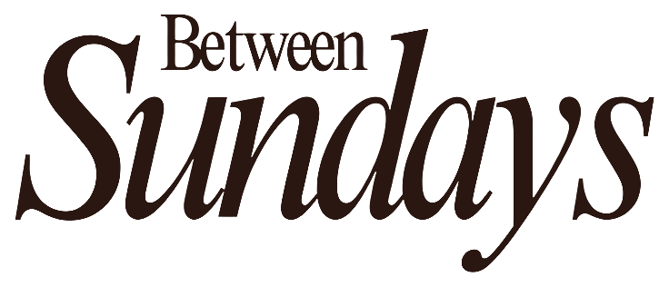

The Spine / 3 of 4
Maybe here counts too
Maybe here counts too.
Not every place feels important while you are standing in it.
Jacob did not wake up in a cathedral. He woke up on the ground, in the middle of a trip he did not fully understand.
The surprise was not that the place became holy. The surprise was that it had been seen all along.
A small thought for whoever found this page.